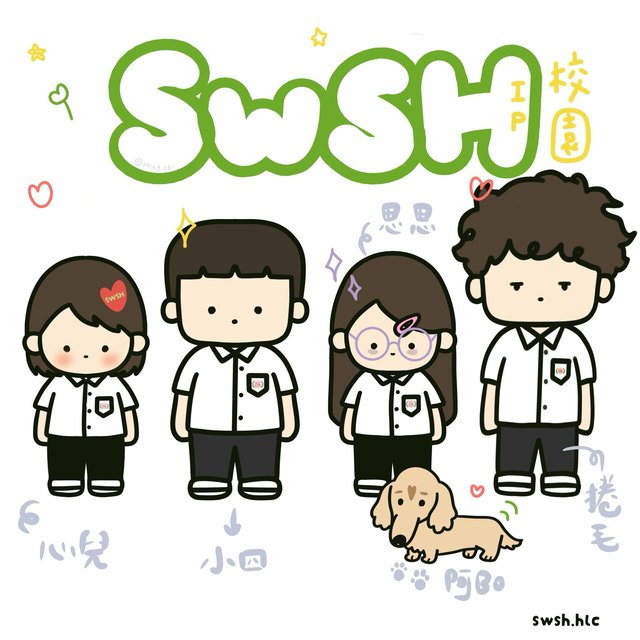
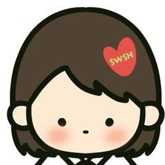
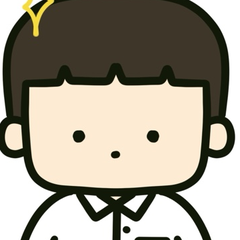
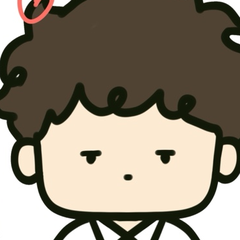
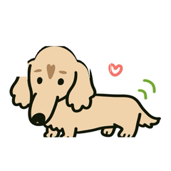

自主探索・踏實啟航 —— 由你掌舵的學習冒險！
自主學習不是自習喔！這裡整理了時程、表件、學長姐成果與自學資源，跟著下面的步驟一步一步來，就能完成一份很棒的自學計畫 ✨


心兒・熱情動力 ❤️
小四・明確目標 ⭐ 思思・深度反思 💭
捲毛・跨界創意 🌀
PijBo・腳踏實地 🐾確立自學主題與 18 週進度，填好計畫申請表並請指導老師簽名。
推動小組審查計畫內容，通過後依核定地點到圖資中心或專科教室研習。
每週帶著紀錄表，寫下收穫與困惑，下課前請現場老師核章。
整理成果作品與自我反思，參加成果分享，並上傳到學習歷程平台！
收錄歷屆優良作品，可參考簡報架構、研究方法與成果呈現方式。